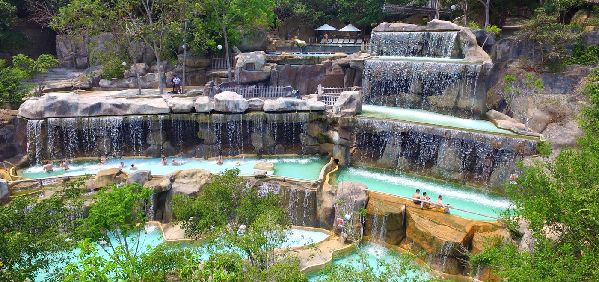

Nha Trang
Tắm bùn khoáng Hòn Tằm Nha Trang
Bạn sẽ trải nghiệm:
- Ngỡ ngàng trước cảnh quan tuyệt đẹp của Hòn Tằm
- Nuông chiều bản thân với các dịch vụ tiện lợi tàu cao tốc khứ hồi, đồ uống chào mừng, bữa trưa tự chọn và tất cả các loại tiện ích để biến một ngày ở bãi biển trở nên hoàn hảo
- Vui chơi thỏa thích tại Công viên nổi, chèo thuyền kayak, thuyền thúng, v.v.
- Nạp năng lượng với bữa trưa buffet hảo hạng
Tự thưởng cho mình một ngày thư giãn tại Đảo Hòn Tằm ! Cảm thấy được nuông chiều khi bạn tận hưởng dịch vụ tàu cao tốc khứ hồi, đồ uống chào mừng và tất cả các loại tiện ích để biến một ngày đi biển trở nên hoàn hảo. Bạn sẽ có một chuyến đi thú vị trên thuyền thúng hoặc thuyền kayak, thư giãn trên một chiếc phao đầy màu sắc và nhiều hơn thế nữa.
Vui đùa tại bãi biển trong vắt màu pha lê và tận hưởng mọi hoạt động dưới nước
Thông tin chung
| Giá vé | Giá từ 430.000 VND. |
| Giờ mở cửa | 08:00-16:00 |
| Địa chỉ | Cảng khách sạn 6 sao Vinpearl, Nha Trang, Khánh Hòa, Vietnam |
Thăm Quan Đảo Hoa Lan & Đảo Khỉ
Bạn sẽ trải nghiệm:
- Hơn 100 loài phong lan nở rộ quanh năm tại Đảo Hoa Lan
- 1000 cá thể khỉ đang được bảo tồn và sống trong tự nhiên trên Đảo Khỉ
- Tắm biển và trải nghiệm nhiều hoạt động thể thao dưới nước
- Các hoạt động giải trí khác nhau: xiếc thú, đua xe kart, v.v.
Cơ hội được tiếp xúc gần với những người bạn khỉ và xem chúng biểu diễn nhiều kĩ năng đặc biệt như đi xe đạp và hơn thế nữa!

Đảo Hoa Lan - cách đảo Khỉ không xa, đúng như tên gọi, là thiên đường của các loài hoa lan, với cảnh sắc thiên nhiên tươi đẹp, và những tác phẩm nghệ thuật cho bạn tha hồ chụp ảnh.

Tham gia vào các trò chơi như đua xe kart hoặc chèo thuyền kayak sẽ góp thêm phần thú vị cho chuyến đi của bạn!
Thông tin chung
| Giá vé | Giá từ 157.653 VND. |
| Địa chỉ | Khu du lịch Đảo Hoa Lan Nha Trang |
Show Rối Mơ tại Nhà Hát Đó

Bạn sẽ trải nghiệm
- Chứng kiến show diễn văn hóa độc đáo kết hợp múa rối nước truyền thống với các hình ảnh, màn trình diễn sống động kèm các điệu múa đương đại hòa hợp nên một trải nghiệm phi thường trong chuyến thăm Nha Trang của bạn
- Vở diễn nghệ thuật sân khấu đồng hiện đầu tiên trên thế giới, kết hợp nhiều loại hình trình diễn rối với hoạt hình, trực diễn, và múa đương đại - tất cả dưới sự dẫn dắt của dàn khí nhạc các dân tộc bản địa Đông Nam Á (SEASOUL)
- Vở diễn đều là trực diễn với tất cả các yếu tố âm nhạc, con rối, hiệu ứng công nghệ,.. đều được điều khiển theo diễn biến trên sân khấu và cảm hứng sáng tạo của người nghệ sĩ
- Đắm chìm trong không gian văn hóa nghệ thuật bản địa đặc sắc thế giới nhất định phải xem khi đến Nha Trang
Thông tin chung
| Giá vé | Giá từ 351.304 VND. |
| Thời gian biểu diễn | 6:00 pm-7:00 pm |
| Địa chỉ | Nhà hát Đó - Vega City Nha Trang, Bãi Tiên, phường Vĩnh Hòa, TP Nha Trang |